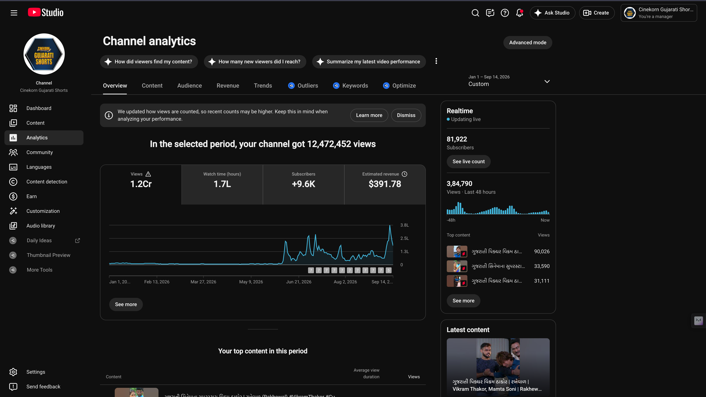

Case 03 · Movies & Cineplex catalogue
Catalogue operations across Movies and Cineplex
Two catalogue surfaces, two jobs: on Cinekorn Movies, a South Hindi-dubbed pipeline plus exclusive titles; on Cineplex, a mixed classic, dubbed, and lesser-known Bollywood slate on a single channel—plus honest tenure math so lifetime totals are not over-claimed.
Context
Two catalogue surfaces, not one number
Catalogue work at Cinekorn is not one channel screenshot. Movies and Cineplex both publish long-form film, but the content mix and the operating problem differ. Lifetime totals include years of prior publishing. Cineplex had a harder product constraint: one channel, several content types, and an algorithm that prefers a single clear category.
Problem
Attribution on Movies; mixed niche on Cineplex
On Movies, a single lifetime total hides what was published during tenure. On Cineplex, classic Hindi, Hindustani-dubbed South films, and lesser-known Bollywood all had to live on the same channel—against the usual “one niche = more reach” advice—while many titles were not already popular.
Strategy
Match the job to the surface
Movies: Run a steady South Hindi-dubbed full-movie lane, plus exclusive titles where the slate required it, and separate tenure publishing from the lifetime channel total.
Cineplex: Treat the channel as a mixed catalogue machine—title packaging, metadata, and publishing rhythm—rather than pretending it was a pure genre channel. Work inside the single-channel limit.
Gujarati Shorts stay out of this case; that lane is covered in the Gujarati distribution cases.
Movies
South Hindi-dubbed slate and exclusive titles
On Cinekorn Movies the core job was a South Hindi-dubbed full-movie pipeline—action, thriller, comedy, and related catalogue—plus exclusive or special releases such as Bishwa and Fakireeyat (full film and promo packaging where used).
Examples from the tenure window (not averages): Fakireeyat and Haiwaniyat show how individual titles can carry weight inside a large library. Studio content lists and overview analytics were used so tenure publishing could be separated from the large lifetime total—65.48M lifetime channel views versus 3.50M from 89 videos published during tenure.
Cineplex
Mixed catalogue under one roof
Cineplex had to carry three lanes on one channel: old classics, South films in Hindustani dub, and lesser-known Bollywood. There was no option to open a clean niche channel per type, so packaging and cadence had to work against niche-algorithm pressure.
In a selected analytics period, the Cineplex content surface showed about 34.5L views—a period total, not a claim that the full channel lifetime was generated in that window. Examples from that mix (not averages): Real Bollywood Full Movie and Jawan Mohabbat.
Evidence
Movies and Cineplex analytics surfaces


Progress view
Movies · lifetime vs tenure views
Movies channel · view split
Lifetime channel views vs views from the 89 videos published during tenure.
Tenure share is ~5.3% of the lifetime total—the bar scale makes that gap visible without overstating either figure.
Takeaway
Attribution and channel design both matter
Movies is a focused South Hindi-dubbed and exclusive catalogue job with clear tenure reporting. Cineplex is a mixed-catalogue job under one roof when the algorithm preferred a single niche. Both need honest channel and window labels—not one vanity number.